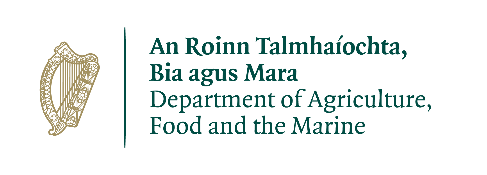

People: PhD (Walsh Fellowship), Niall Farrelly (Teagasc), Jon Yearsley (UCD)
PhD project details
Details to folow Application closing date: TBD.
Climate change projections indicate that temperatures are likely to increase in all seasons, over the period 2021-2100 while precipitation is likely to decrease during the summer months for the same period (Fealy et al., 2018). In the meantime, the frequency of extreme rainfall and droughts are projected to increase (Noone et al, 2017; Seneviratne et al., 2010). These changes will have significant consequences for ecosystem productivity across Europe, with drought stress limiting forest productivity (De Boeck et al., 2011). It is likely that growth phenology will also be impacted by rising temperatures; for many species budburst will occur earlier with increasing temperatures (Chmielewski and Rotzer 2001; Fu et al. 2014) and the length of the growing season will increase (Vitasse et al. 2013).
This project has two specific tasks:
This project is part of the DAFM funded AgriAdapt project; a collaboration between Teagasc, UCD and Dundalk Institute of Technology. AgriAdapt is focussed on developing strategies for Irish agriculture to adapt to the challenges posed by climate change.

This research proposal will aim to evaluate range expansion of Sitka spruce provenances as a result of climate change. We will examine provenance data from the IUFRO series of provenance trials (available from 9 locations with 6 supplementary sites) and examine the effect of accumulated temperature, indices of soil moisture availability and water availability on the productivity of Sitka spruce provenances across Ireland. Following an examination of the importance of correlations, stepwise multiple regression equations will be developed to predict the effect of increases/decreases to variables of importance. These equations can be used in a GIS to develop suitability maps for future Sitka spruce, provenance matching (Farrelly et al., 2009). A comparison of climate yield assumptions with existing developed models to determine performance as necessary (e.g. CLIMADAPT, Ray et al. 2009) will be undertaken.
To supplement the analysis we will examine another relevant chosen species planted across a range of Irish soils and climate regimes. We will utilise the methodology of Farrelly et al. (2009, 2011) to separate distinct soil-climate groups known to effect productivity, we will assess the sensitivity in changes to temperature and soil moisture on known soil groups and model if changes to forest productivity are observed. The rate of change in yield for given soil for the various climate inputs will be assessed and we aim to identify vulnerable areas.Opportunities exist to suggest potential adaptation measures, where the primary species becomes less suited to future conditions and alternative species may become more suited. We aim utilise historical data on soil-productivity from the National Forest Inventory, Coillte and Teagasc soils-productivity studies and will focus key forest species (Sitka spruce, Douglas fir and another) to assess adaptive potential of key species on Irish forest soils.
There has been renewed interest in using dendrochronology to assess the effects of climate on the historical growth patterns of trees. The FitForests project (DAFM-2019R511) has shown the relative success in utilising SPEI (Standard precipitation evapotranspiration index) models to assess historical drought intensity, especially on soils heretofore assumed to be drought immune (e.g. gleyed soils). Preliminary results show that SPEI models correlated well with radial growth in Sitka spruce when SPEI predicts severe drought. In such cases the effect on radial growth development (i.e. annual growth increment) is quite severe. Although the incidence of severe drought is currently relatively rare (e.g. (Fealy et al., 2018), there is increasing uncertainty about whether drought frequency is likely to increase as a result of climate change. The SPEI model is very useful in this regard, as it utilises precipitation and temperature based drivers of evapotranspiration which can be used in climate change scenario.
We wish to assess the usefulness of SPEI, especially on driers areas of Ireland e.g the eastern half of Ireland on soils more liable to drought. We aim to develop SPEI models using observational data from Met Éireann’s observational network. Forests located within 15 km of the Meteorological station (with no lag effects) will be prioritised for assessment. We aim to assess the frequency and intensity of drought using the SPEI models to assess historical drought intensity. Study sites with forests that have experienced different levels of drought will be selected to assess radial growth performance on soils with historical drought. Opportunities exist at JFK arboretum for studying multiple species at the same site in the vicinity of the observational station. We will take advantage of ring coring and tree ring analysis technology (e.g.Windendro) to study effect of drought on radial growth and eliminate possible sources of error (e.g. competition). This will allow us to assess the relative species effect and the long-term outlook for specific species growing in certain environments commensurate with different climate scenarios.
This work is funded by the Department of Agriculture, Food and Marine (DAFM).
